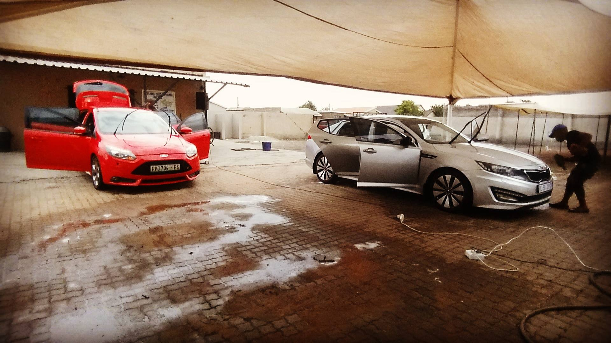
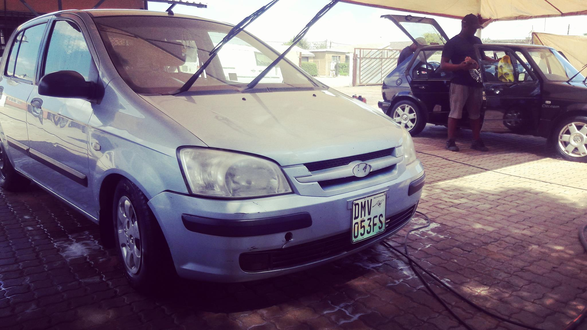

Our Car Wash
Our staff from Thami's Shisanyama and Car Wash is from the Rammulotsi community areas. The business has not only inspired workers to be productive and deliver a quality service, but also empowered these residents in the community, by providing them with means to uplift and their lifestyle and enjoy the benefits of full-time employment.
Customer retention and satisfaction has always been a focal point with plans for growing business. Thami's Shisanyama and Car Wash is able to provide a broader level of customer satisfaction.Thami's Shisanyama and Car Wash proudly offers the following services:
- Complete car wash facility - Comprehensive 'Top to tyre' cleaning facility for all motor vehicles at affordable prices.
- A full team experienced employees - Who have a couple of years of experience will look after your motor vehicle with the pride and car as if it were their own.
- A loyalty program - A customer will get a loyalty card that shows how many times you washed your car, it will have 5 boxes. If a customer has washed their car 4 times, they will be rewarded a 5th wash for free.
- Security - Customer are assured safety with complete CCTV surveillance as well as security patrol.

